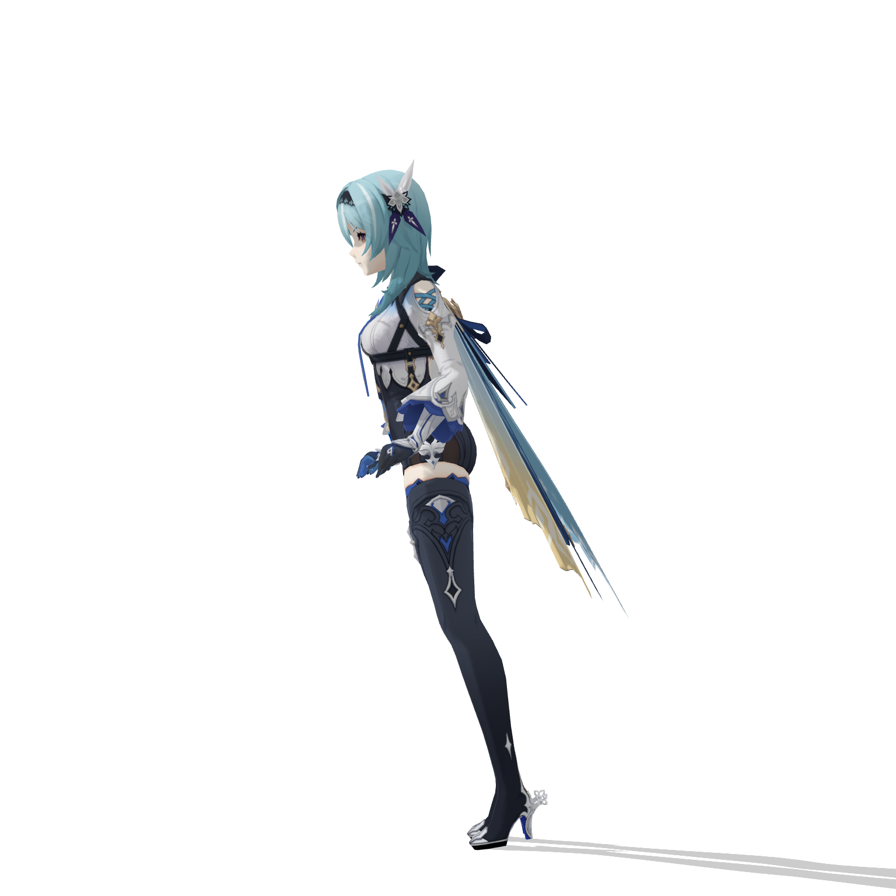
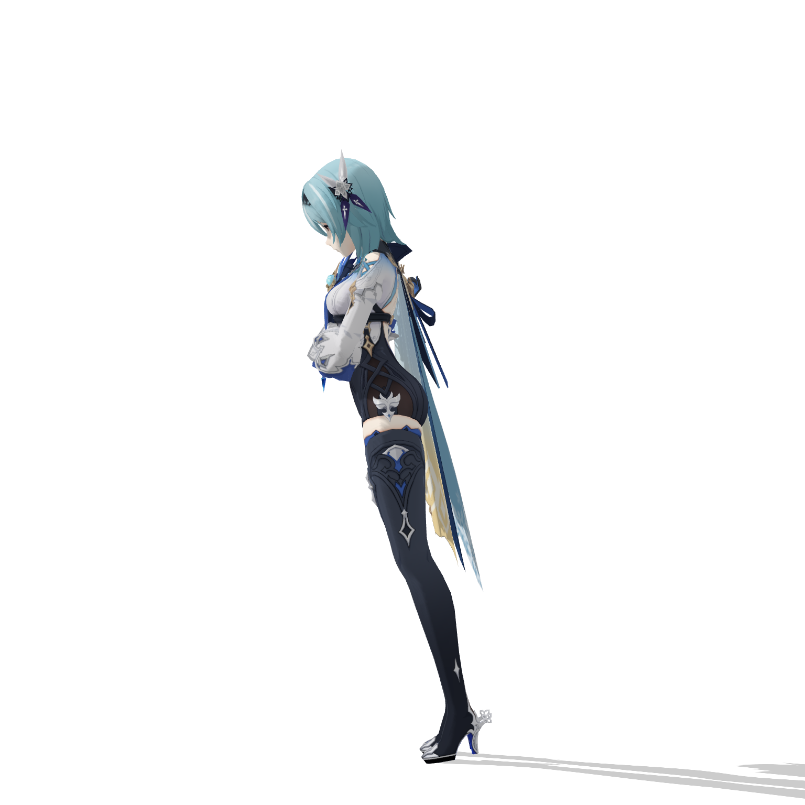
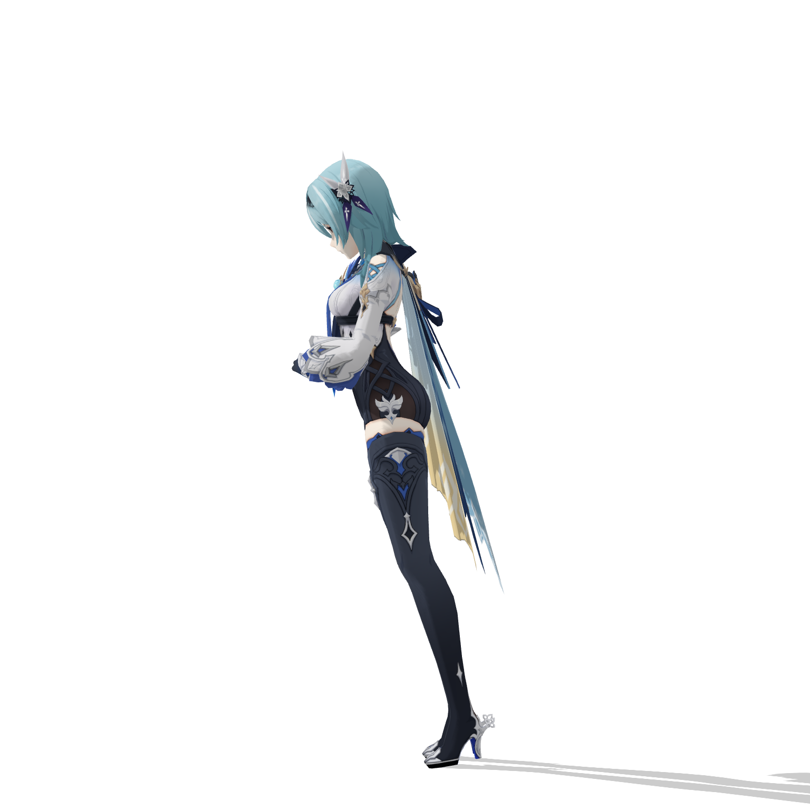
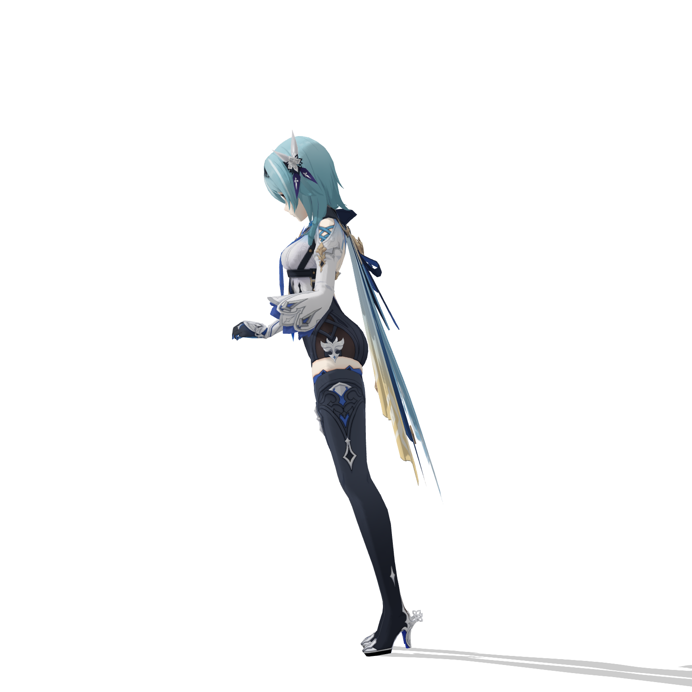
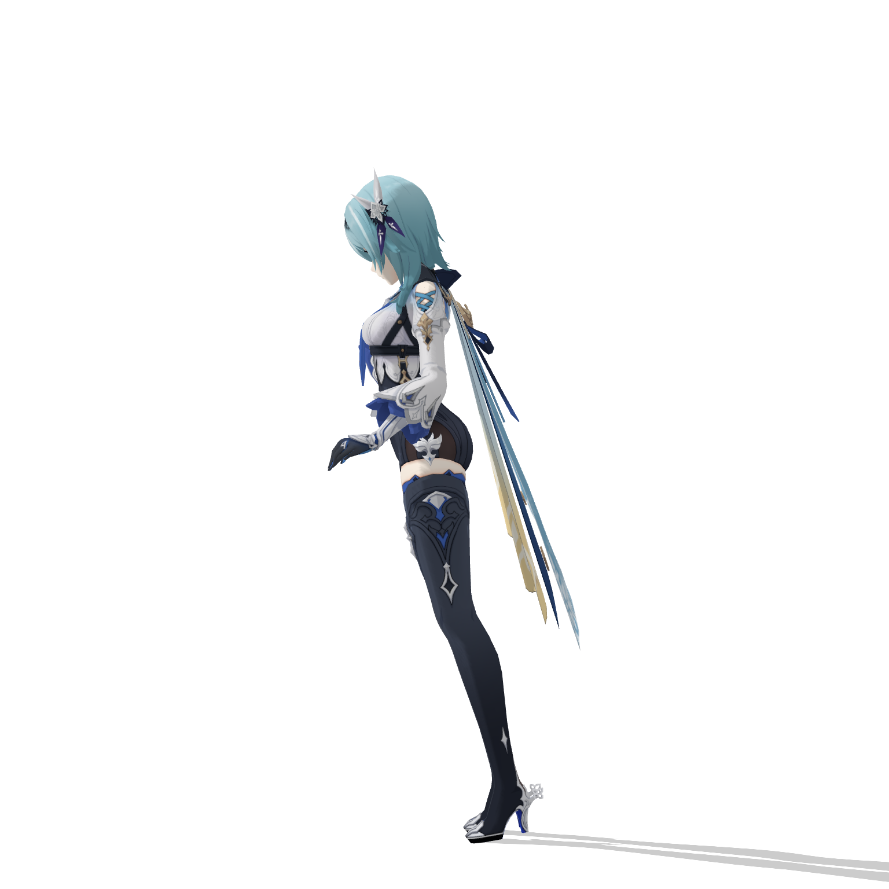
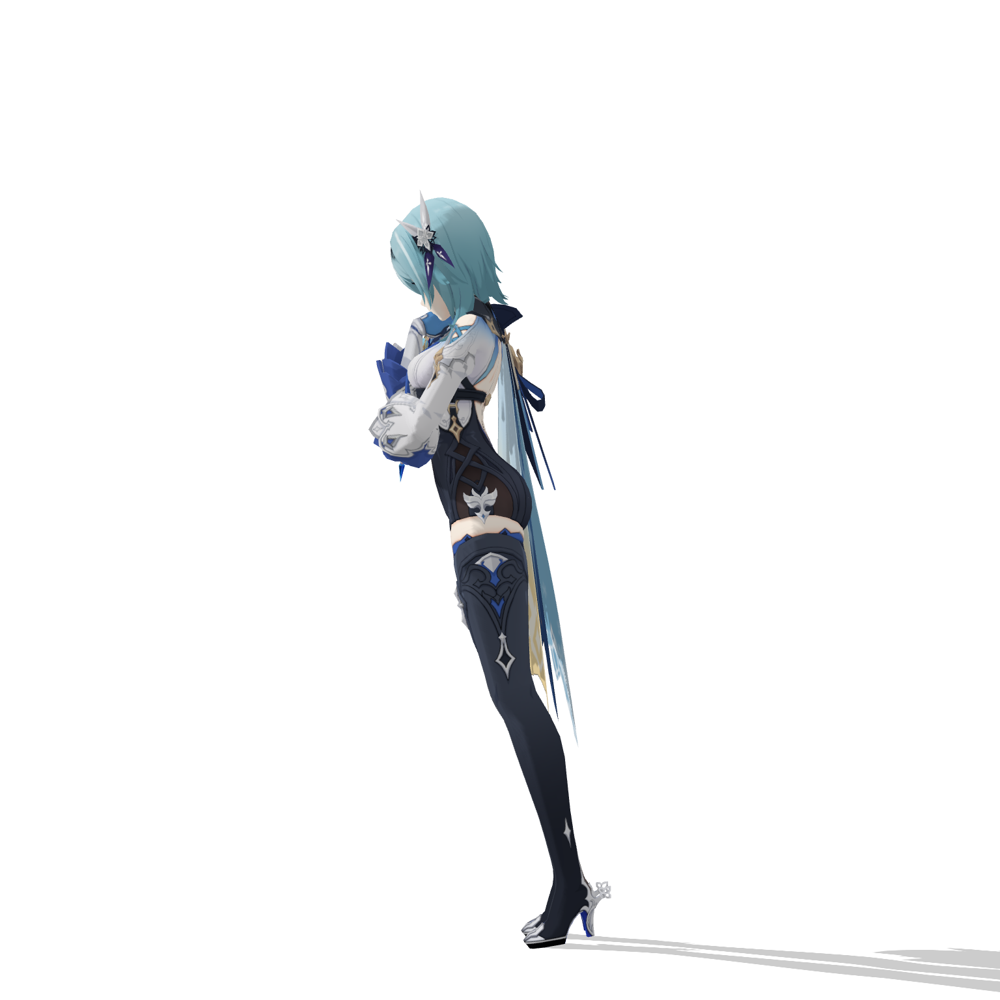
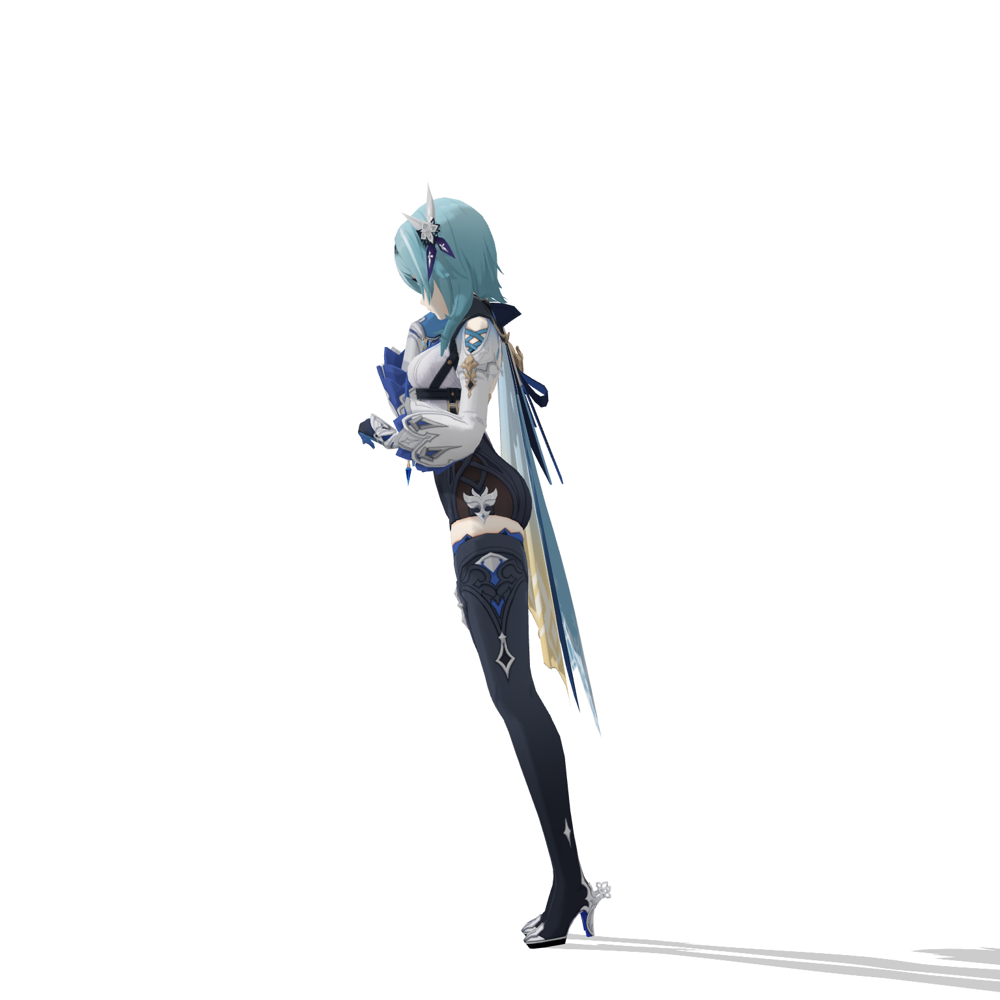

f0
right wrist to chin: 311.5px
left wrist to waist: 77.2px
left wrist to waist world: 3.13u
torso core clearance: 0.25u
elbow angle R/L: 135.9deg / 129.6deg
knee angle R/L: 171.8deg / 170.8deg
shoulder angle R/L: 34.1deg / 38.2deg

f30
right wrist to chin: 104.6px
left wrist to waist: 173.3px
left wrist to waist world: 1.62u
torso core clearance: 0.25u
elbow angle R/L: 41.4deg / 73.0deg
knee angle R/L: 171.8deg / 170.8deg
shoulder angle R/L: 32.3deg / 32.0deg

f36
right wrist to chin: 83.9px
left wrist to waist: 187.0px
left wrist to waist world: 2.04u
torso core clearance: 0.25u
elbow angle R/L: 38.4deg / 89.2deg
knee angle R/L: 171.8deg / 170.8deg
shoulder angle R/L: 32.2deg / 32.5deg

f42
right wrist to chin: 65.5px
left wrist to waist: 173.4px
left wrist to waist world: 2.56u
torso core clearance: 0.25u
elbow angle R/L: 35.6deg / 108.7deg
knee angle R/L: 171.8deg / 170.8deg
shoulder angle R/L: 31.9deg / 33.9deg
f48
right wrist to chin: 48.3px
left wrist to waist: 114.8px
left wrist to waist world: 3.16u
torso core clearance: 0.25u
elbow angle R/L: 33.5deg / 129.7deg
knee angle R/L: 171.8deg / 170.8deg
shoulder angle R/L: 31.3deg / 36.3deg

f54
right wrist to chin: 31.8px
left wrist to waist: 115.4px
left wrist to waist world: 3.04u
torso core clearance: 0.25u
elbow angle R/L: 32.7deg / 130.0deg
knee angle R/L: 171.8deg / 170.8deg
shoulder angle R/L: 33.6deg / 35.1deg
f60
right wrist to chin: 37.4px
left wrist to waist: 200.9px
left wrist to waist world: 2.08u
torso core clearance: 0.25u
elbow angle R/L: 33.7deg / 73.3deg
knee angle R/L: 171.8deg / 170.8deg
shoulder angle R/L: 45.4deg / 34.1deg
f90
right wrist to chin: 37.4px
left wrist to waist: 200.9px
left wrist to waist world: 2.08u
torso core clearance: 0.25u
elbow angle R/L: 33.7deg / 73.3deg
knee angle R/L: 171.8deg / 170.8deg
shoulder angle R/L: 45.4deg / 34.1deg

f120
right wrist to chin: 37.4px
left wrist to waist: 200.9px
left wrist to waist world: 2.08u
torso core clearance: 0.25u
elbow angle R/L: 33.7deg / 73.3deg
knee angle R/L: 171.8deg / 170.8deg
shoulder angle R/L: 45.4deg / 34.1deg

f178
right wrist to chin: 37.0px
left wrist to waist: 205.9px
left wrist to waist world: 2.16u
torso core clearance: 0.25u
elbow angle R/L: 33.7deg / 76.3deg
knee angle R/L: 171.8deg / 170.8deg
shoulder angle R/L: 42.7deg / 31.1deg